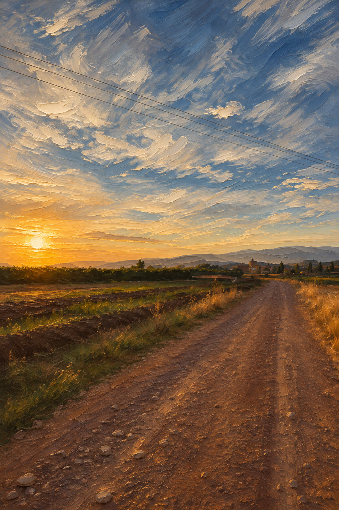
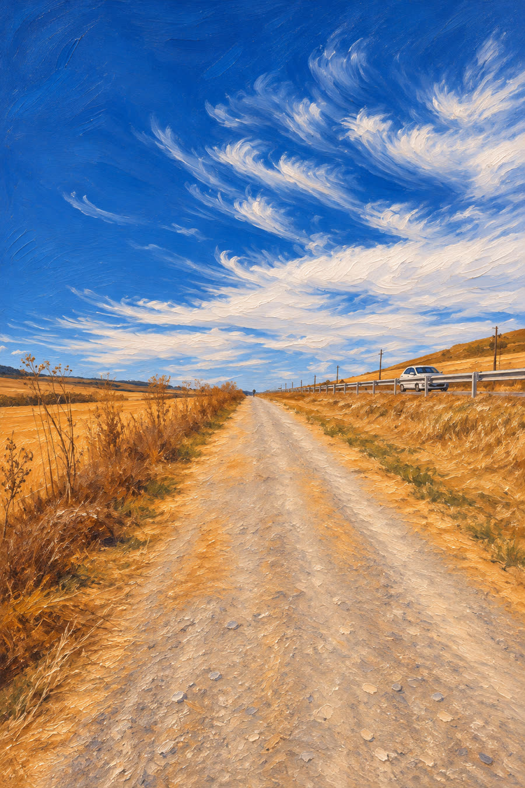
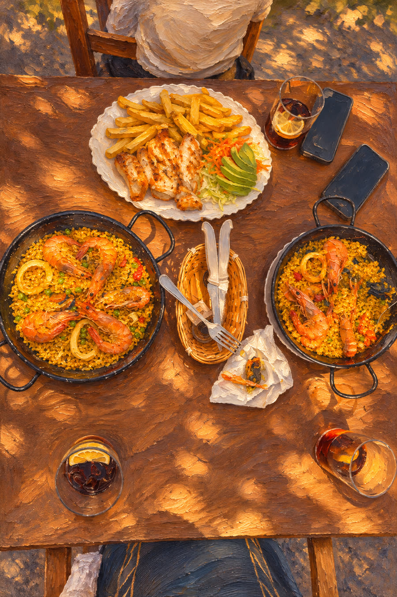
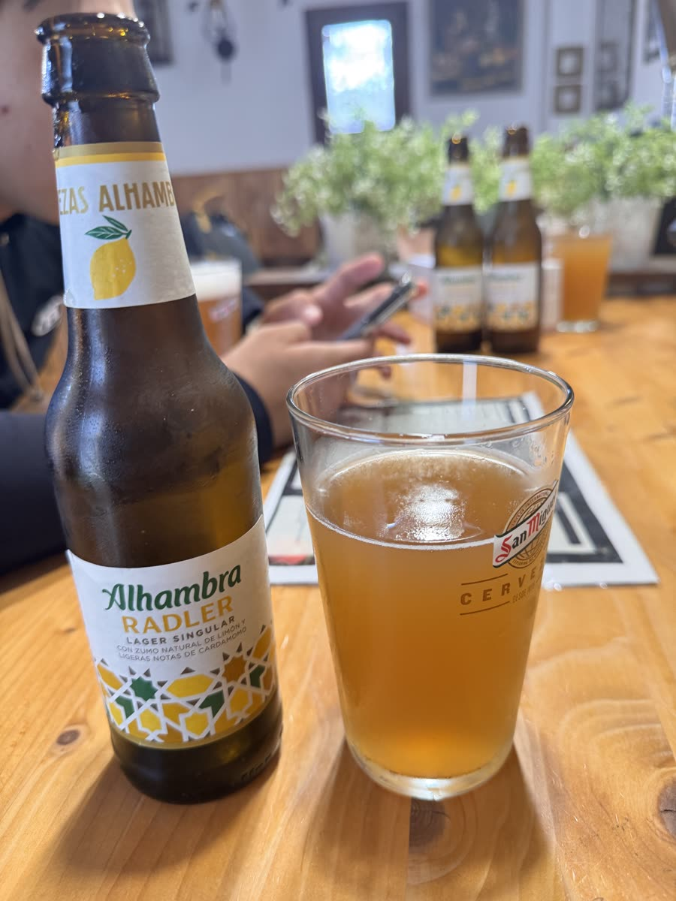
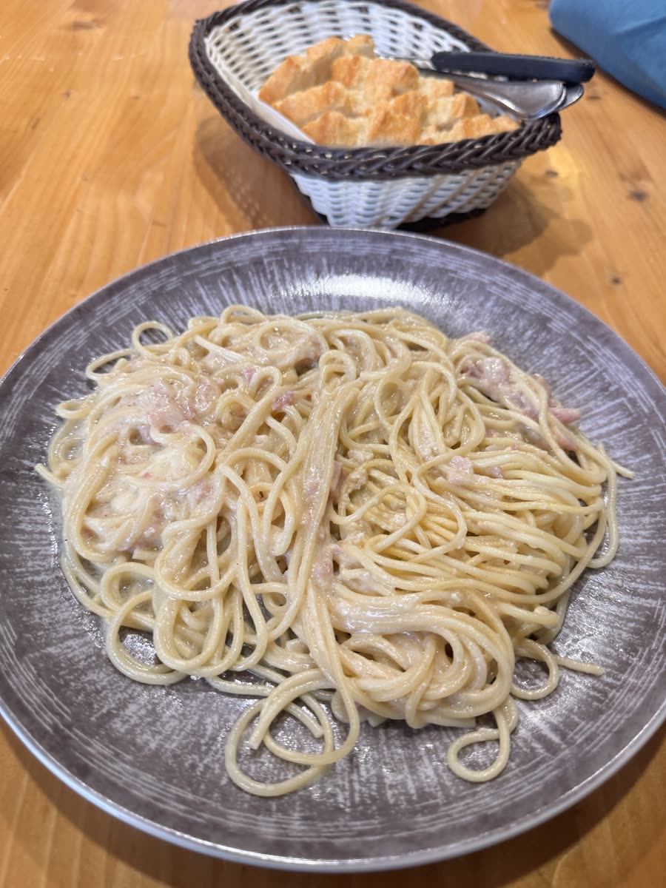
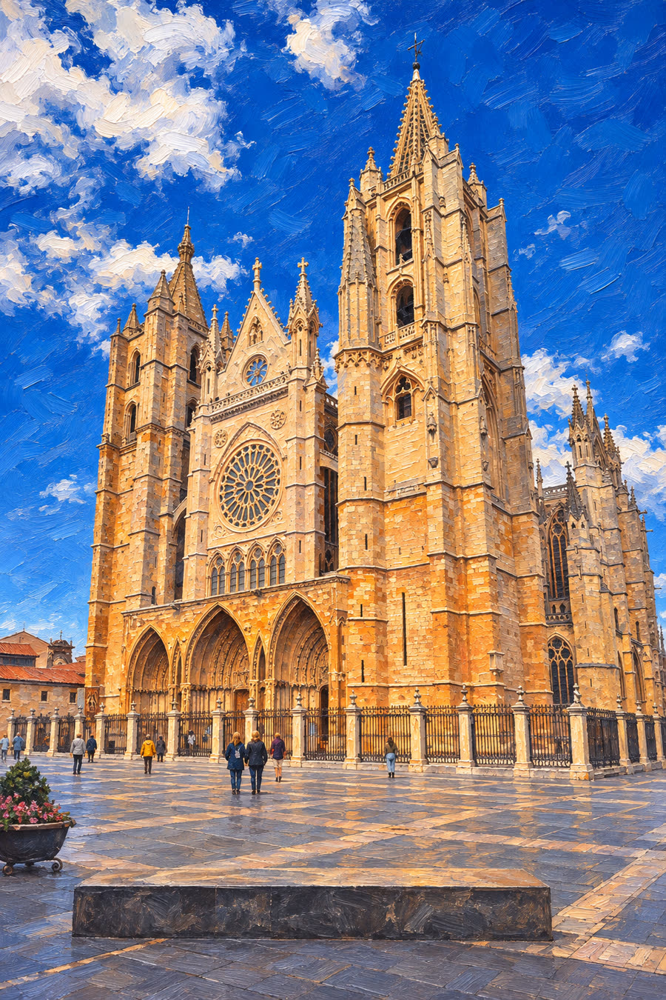
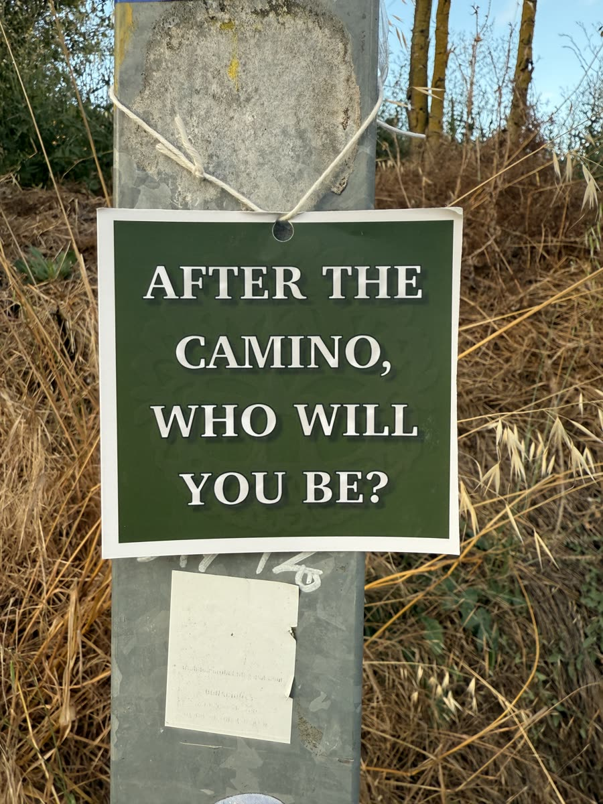

순례자의 한끼한밤
순례자의 한끼한밤하루 25km를 걷고 나면,
남는 질문은 딱 하나다.
오늘 저녁은 뭘 먹지?
2025년 여름, 산티아고 순례길 프랑스길을 32일 동안 걸었다. 원래는 34일 일정이었는데, 중간에 이틀을 줄여야 해서 마을 몇 개를 그냥 지나치며 걸은 날도 있었다.
걷기 전엔 풍경이 제일 기억에 남을 줄 알았다. 그런데 돌아와서 그날그날 적어 둔 일기를 다시 읽어 보니, 유독 많이 적혀 있는 건 음식 이야기였다. 그날 뭘 먹었는지가 그날 어땠는지를 다 말해 준다. 그래서 순례길 이야기의 첫 편은 길 위에서 먹은 한 끼들로 시작한다.


i.기대가 너무 컸던 빠에야
스페인 하면 빠에야다. 열흘째, 산토도밍고에서 드디어 스페인에서의 첫 빠에야를 먹었다. 결과는… 평범했다. 기대가 너무 컸던 탓일까.
다음 날 점심, 길가 식당에서 커다란 팬 가득 새우와 오징어가 올라간 노란 밥을 다시 만났다. 이번엔 지친 몸이 먼저 반응했다. 그리고 열나흘째 온타나스에서 세 번째 빠에야를 먹었을 때, 처음으로 이 말이 나왔다. "오, 먹을 만하다."
빠에야가 맛있어진 건지, 내 다리가 길에 적응한 건지는 아직도 모르겠다.

ii.산꼭대기 트럭에서 받은 수박 한 조각
열이틀째는 최악의 날 중 하나였다. 며칠 전 벌에 쏘인 발목이 퉁퉁 부어 있었고, 400m를 올랐다가 다시 내려가야 하는 길이었다.
가장 높은 고지에 겨우 올라섰을 때, 과일을 파는 작은 트럭이 서 있었다. 거기서 우연히 만난 한국분이 수박을 사 주셨다. 땀으로 달아오른 몸에 차가운 단맛이 스며들던 그 순간은, 이번 순례길에서 먹은 어떤 음식보다 오래 기억에 남아 있다.
그날 점심엔 "오늘은 취한 기분으로 걸어야겠다"고 농담하며 레몬 맥주를 시켰다. 나온 건 시원한 알함브라 레몬 맥주. 까르보나라와 빠에야를 곁들이고 나서야 다시 걸을 힘이 났다.


iii."Delicioso!" 한마디의 값
스물하루째, 레온을 떠나 7km쯤 걸었을 때 작은 바에 들어갔다. 샌드위치와 콜라로 아침을 때우려던 건데, 샌드위치가 너무 맛있어서 결국 하나를 더 시켰다.
먹는 내내 아는 스페인어를 총동원해 "¡Delicioso!(맛있어요!)"를 연발했다. 그랬더니 나갈 때 사장님이 웃으며 참치 샌드위치 하나를 더 챙겨 주셨다. 말이 잘 안 통해도 맛있다는 말은 통한다. 그게 순례길에서 배운 가장 쓸모 있는 스페인어였다.

iv.순례자 메뉴라는 저녁 의식
순례길 마을 식당에는 대부분 '순례자 메뉴'가 있다. 수프나 파스타 같은 첫 접시, 생선이나 고기 같은 두 번째 접시, 디저트, 그리고 빵과 와인. 정해진 코스를 순례자를 위해 싼값에 내놓는 저녁이다.
처음 보는 사람들과 한 식탁에 앉아 와인을 따르다 보면 어느새 이야기가 시작된다. 어디서 왔는지, 왜 걷는지, 발은 괜찮은지. 열엿새째 까리온에서는 순례자 메뉴로 점심을 먹고, 저녁엔 동행들과 장을 봐서 직접 요리를 했다. 맥주와 웃음이 곁들여진 그 식탁은 그 어떤 레스토랑보다 소중했다.
'한끼한밤'이라는 이름에 담고 싶었던 게 바로 이 식탁이다.
v.메세타 한복판의 신라면
부르고스를 지나면 '메세타'라는 끝없는 평원이 시작된다. 며칠 동안 똑같은 밀밭과 직선 길만 이어지는 구간이다. 몸보다 마음이 먼저 지친다.
열여드레째, 엘 부르고 라네로 마을 초입의 작은 마켓 선반에서 신라면과 김치를 발견했다. 멀리 떨어진 고향을 만난 것 같았다. 그날 저녁, 뜨끈한 국물과 매콤한 김치를 먹으며 다시 한번 알았다.
vi.해발 1,400m, 라면이 나오는 알베르게
스물사흘째, 아스토르가에서 폰세바돈까지 산을 올랐다. 1,000m를 넘어서자 매서운 바람과 가랑비가 몰아쳤다.
그렇게 도착한 알베르게는 외국인이 운영하는 곳이었는데, 신기하게도 저녁 메뉴에 한국 라면과 김치, 밥이 있었다. 빗속을 걷고 나서 따뜻한 국물을 들이키니 온몸이 녹아내리는 것 같았다. 오랜만에 먹는 라면은 그 어떤 고급 요리보다 소중했다.
그날 묵은 10인실은 절반이 한국인이었다. 금세 모여 앉아 와인을 나누며 하루를 마무리했다. 낯선 나라 산꼭대기에서 만난 한 끼와 한밤. 지금 생각해 보면, 이 이야기의 시작은 그날 밤이었는지도 모른다.

vii.숫자로 본 32일의 식탁
- 32일걸은 날 (원래 34일 계획에서 이틀 줄임)
- 6만 원하루 평균 쓴 돈. 비행기표 빼고, 기념품까지 다 합쳐서
- 3번"먹을 만하다"는 말이 나오기까지 먹은 빠에야
- 0kg32일 걷고 변한 몸무게. 그만큼 잘 먹었다는 뜻
🇬🇧 For pilgrims passing by
Thirty-two days on the Camino Francés, summer 2025. The paella was ordinary the first time and "not bad" by the third. A stranger bought me watermelon at a fruit truck on the highest hill. A bar owner in León gave me a free tuna sandwich because I kept saying "¡Delicioso!". And on a cold, rainy night in Foncebadón, an albergue served Korean ramen and kimchi. That table is where Hankki Hanbam began.
🥾 순례길 32일 연재
- 1편 · 오늘 저녁은 뭘 먹지? (지금 읽는 글)
- 2편 · 오늘은 어디서 자지?
- 3편 · 피레네를 하루 만에 넘은 날
- 4편 · 밀밭에 20분 누워 있던 날
- 5편 · 산티아고, 그리고 땅끝 피스테라 (준비 중)
- 6편 · 순례길 준비는 이렇게 했다

🕯️ 오늘 밤 이야기는 여기까지.
다음 편은 32일 동안 잠든 침대들의 이야기입니다.